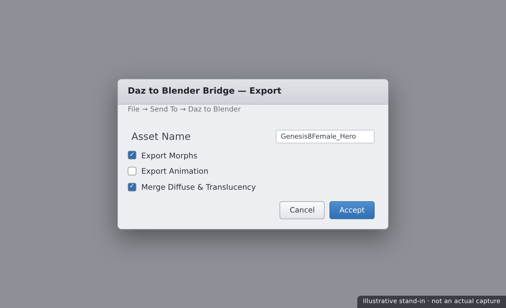
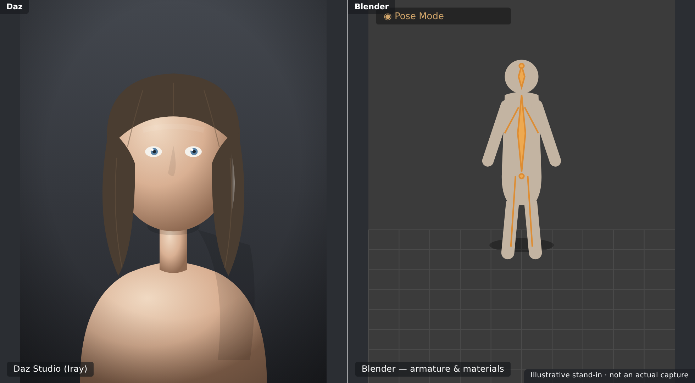

🌉 Lesson 5.1: The Daz to Blender Bridge
Your Daz character doesn't have to stay in Daz. The official Daz to Blender Bridge sends your Genesis figure — mesh, rig, and materials — straight into Blender with a couple of clicks, ready to light, animate, and render with the tools you already know from the Blender course. In this lesson you'll install the bridge on both sides, export a figure, understand exactly what does and doesn't transfer, fix up the materials on the Blender side so they look right in Cycles or Eevee, and learn when the community Diffeomorphic add-on is the smarter choice. This is where the pipeline opens up.
🎯 Learning Objectives
By the end of this lesson, you will be able to:
- Explain what a bridge is and why it beats manual exporting
- Install the Daz to Blender Bridge on both the Daz and Blender sides
- Export a Genesis figure from Daz into Blender
- Know what transfers — mesh, rig, morphs, and materials — and what doesn't
- Fix up materials in Blender for Cycles or Eevee
- Decide when to use Diffeomorphic instead of the official bridge
- Follow a dependable bridge workflow
Estimated Time: 60 minutes
Project: Your finished Daz character imported into Blender with a working rig and cleaned-up materials, sitting in a Blender scene ready to render.
In This Lesson
Why Bridge to Blender
Daz is superb at building and posing figures, but you might prefer Blender for lighting, environments, animation, or its free, powerful render engines. Rather than wrestle with manual file exports, the official Daz to Blender Bridge automates the whole handoff — one command in Daz, and your figure appears in Blender set up and ready.
💡 The one-sentence version: A bridge is an automated exporter-importer pair that carries your Daz figure — mesh, rig, and materials — into Blender in one step, so you can keep working with tools you already know.
📖 Definition
Bridge: a pair of plugins — one in Daz Studio, one in the target app — that packages a figure and transfers it automatically. The official Daz bridges exist for Blender, Unreal, Maya, 3ds Max, and more, each landing the figure natively in that program.
The payoff is a real pipeline: shape and pose in Daz where it's easy, then render and animate in Blender where you have full creative control and no per-frame licensing worries. The same character moves fluidly between the two.
💡 The bridge is a starting point, not a finish line
The bridge gets your figure into Blender fast and faithfully, but materials especially often need a cleanup pass to look their best in Cycles or Eevee. Think of the bridge as delivering a well-organized foundation you then refine — not a one-click perfect render.
⚠️ Important Note: Bridges are version-sensitive. The Daz plugin and the Blender add-on must be compatible with your versions of each program. Mismatched versions are the most common reason a bridge "doesn't show up" or fails mid-transfer — always install matching, current releases.
Installing the Bridge
A bridge has two halves, and both must be installed: a plugin inside Daz Studio and an add-on inside Blender. Miss either and the handoff won't work.
📖 Definition
The two halves: the Daz-side plugin (installed via Daz Install Manager or Daz Central) adds a Send to Blender command in Daz; the Blender-side add-on (a .zip enabled in Blender's Preferences) receives the exported data and builds the figure.
Install order
| Step | Where | What you do |
|---|---|---|
| 1. Daz plugin | Daz Install Manager | Install "Daz to Blender Bridge"; it adds a menu command |
| 2. Blender add-on | Blender Preferences → Add-ons | Install the bridge .zip and enable its checkbox |
| 3. Verify | Both apps | Confirm the Daz menu item and the Blender panel appear |
✅ Pro Tip — get the Blender add-on from the Daz plugin
The matching Blender add-on .zip ships with the Daz-side plugin (there's usually a button in the Daz bridge dialog to reveal or install it). Grabbing it from there guarantees the two halves are the same version — far safer than downloading a random copy that may not match.
⚠️ Important Note: After enabling the add-on in Blender, save your Preferences so it stays enabled next launch. And on Windows, if Daz can't write the transfer files, run into a permissions wall, or don't see the menu, launching Daz as administrator once after install often clears it up.
Exporting a Figure
With both halves installed, sending a figure is quick. In Daz, select your figure and choose File → Send To → Daz to Blender (or the bridge's menu entry). A dialog lets you name the asset and pick options, then it packages everything and hands off to Blender.

Two ways to receive it in Blender:
- Live transfer — if Blender is open with the add-on ready, the bridge can import automatically after the export completes.
- Import the export — otherwise, open Blender and use the bridge panel's Import button to pull in the most recent export.
💡 Export a clean, base figure first
For your first transfer, send a simple figure — base Genesis with skin materials, no heavy hair or dozens of props. A minimal export transfers fast and makes it obvious what came through correctly. Add clothing, hair, and props once the basic pipeline is proven.
⚠️ Important Note: Only include the morphs you actually need. The bridge can transfer shape morphs, but selecting hundreds bloats the file and slows both export and Blender. Pick the character and expression morphs the figure uses, not the entire installed library.
What Transfers
Knowing exactly what the bridge carries over — and what it doesn't — saves a lot of confusion on the Blender side. The core figure comes through well; some Daz-specific extras need rebuilding.
| Item | Transfers? | Notes |
|---|---|---|
| Mesh geometry | ✅ Yes | The figure's body and any sent clothing meshes |
| Skeleton & weights | ✅ Yes | Comes in as a Blender armature you can pose |
| Materials & textures | ✅ Mostly | Converted to Blender shaders; expect cleanup |
| Shape morphs | ✅ If selected | Arrive as shape keys when you include them |
| Iray shader nuances | ⚠️ Approximated | Skin SSS, translucency may need tuning |
| Poses/animation | ⚠️ Optional | Current pose or animation if you choose to include it |
📖 Definition
Shape key (Blender): Blender's equivalent of a morph — a stored deformation you can dial from 0 to 1. When you include morphs in the bridge, they land as shape keys, so the character's face and body shaping can still be adjusted in Blender.
⚠️ Important Note: Iray's skin shading is physically rich — subsurface scattering, layered translucency — and no automatic conversion reproduces it perfectly. The bridge gives you a strong starting material, but photoreal skin in Blender always benefits from a manual pass on subsurface and roughness, covered next.
Fixing Materials in Blender
The most common bridge follow-up is tidying materials. The bridge builds Blender Principled BSDF shaders from your Daz surfaces, and while textures usually map correctly, skin and eyes often want a few adjustments to shine in Cycles or Eevee.
📖 Definition
Principled BSDF: Blender's standard all-in-one physically based shader. The bridge plugs your Daz diffuse, normal, roughness, and other maps into its inputs — the same PBR philosophy as Iray's Uber shader, so the concepts transfer even when values need tweaking.
Typical fixes
- Subsurface scattering — enable/raise it on skin so light passes through convincingly; the bridge may set it low or off.
- Roughness — skin can import too shiny or too matte; nudge roughness for believable specularity.
- Eyes — cornea/eye-moisture surfaces sometimes need transparency and clarity fixes to stop looking dead.
- Normal/bump strength — verify pores and detail read at a sensible intensity.
✅ Pro Tip — do a quick render before deep tweaking
Before adjusting anything, drop a light and do a fast Cycles preview. Many materials look wrong in the solid viewport but fine when actually lit and rendered. Judge — and fix — materials under real lighting, not the flat workbench shading, or you'll "fix" things that weren't broken.
⚠️ Important Note: Cycles and Eevee handle subsurface and transparency differently, so a skin setup dialed for one can look off in the other. Decide which engine you'll render in and tune the materials for that engine — don't expect one set of values to be perfect in both.
When to Use Diffeomorphic
The official bridge isn't the only route. Diffeomorphic (the "Import Daz" add-on) is a free, community-built Blender tool that imports Daz figures directly from their scene files — often with more fidelity and control, at the cost of a steeper learning curve.
📖 Definition
Diffeomorphic (DazToBlender / "Import Daz"): a free Blender add-on that reads Daz .duf scene files directly and rebuilds the figure in Blender, with advanced options for materials, morphs, rigging (including a Rigify option), and posing. It's more capable but more complex than the official bridge.
Which to reach for
| Choose… | When you want… |
|---|---|
| Official Bridge | Fast, simple, one-click handoff for a quick figure transfer |
| Diffeomorphic | Maximum material/morph fidelity, advanced rigging, and fine control |
💡 Start with the bridge, graduate to Diffeomorphic
For learning and quick work, the official bridge is the friendly on-ramp. As your needs grow — better skin shaders, complex morphs, Rigify control rigs — Diffeomorphic rewards the extra effort. Many artists keep both and pick per project; there's no single right answer.
⚠️ Important Note: Diffeomorphic is powerful but has a real learning curve and its own workflow quirks; it reads your installed Daz content directly, so paths must be set correctly. If you're new, don't feel you must master it — the official bridge covers the essentials this course needs.
A Bridge Workflow
Put it together into a repeatable process and moving figures to Blender becomes routine.
| Step | Do this | Why |
|---|---|---|
| 1. Prepare | Finalize shape, pose, and materials in Daz | You transfer what's there; fix it in Daz first |
| 2. Trim | Select only the morphs you need | Keeps the export lean and Blender responsive |
| 3. Send | File → Send To → Daz to Blender | Packages mesh, rig, and materials automatically |
| 4. Fix | Clean up skin/eye materials under a test render | The bridge's shaders are a starting point |
| 5. Build | Light, stage, and render in Blender | Now use your Blender-course skills |
💡 Keep the Daz scene as your source of truth
The bridge is one-directional: changes you make in Blender don't flow back to Daz. Treat the Daz scene as your master. Need a different shape or a fixed material at the source? Change it in Daz and re-bridge, rather than trying to keep two divergent versions in sync.

⚠️ Important Note: Large figures with lots of morphs, clothing, and 4K textures make big transfers that can take a while and use significant memory in Blender. If a transfer stalls or Blender bogs down, simplify the export — fewer morphs, decimated or hidden props — and bring pieces over in stages.
Hands-on: Send to Blender
Let's move your character into Blender — install-check, export, then fix the materials on the far side.
🏋️ Exercise 1: Verify Both Halves
Objective: Confirm the bridge is installed on both ends.
Steps:
- In Daz, check for the File → Send To → Daz to Blender menu entry.
- In Blender, open Preferences → Add-ons and confirm the Daz bridge add-on is enabled.
- If either is missing, install it (Daz via DIM, Blender via the add-on
.zip) and re-check.
🏋️ Exercise 2: Export a Base Figure
Objective: Transfer a clean figure into Blender.
Steps:
- Select a base Genesis figure with skin materials and only the morphs it uses.
- Run Send To → Daz to Blender, name the asset, and send.
- In Blender, confirm the figure arrives with a posable armature and its materials attached.
💡 Hint — nothing shows up in Blender after I send
Check the basics in order: is the Blender add-on enabled (and Preferences saved)? Are the Daz plugin and Blender add-on the same version? If the live transfer didn't fire, open Blender's bridge panel and click Import to pull the most recent export manually. On Windows, a permissions issue can block the transfer files — try launching Daz as administrator once.
🏋️ Exercise 3: Fix the Skin
Objective: Make the materials render well in Blender.
Steps:
- Add a light and do a quick Cycles preview to judge the skin under real lighting.
- On the skin's Principled BSDF, raise subsurface and adjust roughness for believable skin.
- Fix the eyes if they look dead, then save the Blender file.
🎯 Quick Quiz
Question 1: What does the Daz to Blender Bridge require to work?
Question 2: After bridging, the skin looks too shiny and flat in Blender. What's the expected fix?
Question 3: When is Diffeomorphic the better choice over the official bridge?
Best Practices
✅ Do's
- Install both halves and keep them version-matched.
- Finalize the figure in Daz first — you transfer what's there.
- Select only needed morphs to keep exports lean.
- Judge materials under a test render, not the solid viewport.
- Tune skin for your target engine — Cycles or Eevee, not both.
- Keep the Daz scene as your one-directional source of truth.
❌ Don'ts
- Don't mismatch plugin versions — the top cause of bridge failures.
- Don't transfer hundreds of morphs — it bloats and slows everything.
- Don't expect perfect skin automatically — Iray shading only approximates.
- Don't edit in Blender expecting it to sync back — the bridge is one-way.
- Don't feel forced into Diffeomorphic — the official bridge covers the basics.
💡 Pro Tips
- Grab the Blender add-on from the Daz plugin to guarantee matching versions.
- Save Blender Preferences after enabling the add-on so it persists.
- Prove the pipeline with a base figure before sending clothing and props.
- Do a quick lit Cycles render before "fixing" any material.
- Re-bridge from Daz rather than maintaining two divergent versions.
Summary
🎉 Key Takeaways
- A bridge automates the Daz-to-Blender handoff — mesh, rig, materials, and selected morphs — in one step.
- It has two halves: a Daz plugin and a Blender add-on, which must be installed and version-matched.
- The figure arrives with a posable armature and Principled BSDF materials; skin and eyes usually need a cleanup pass.
- Diffeomorphic is the more powerful, more complex alternative — reach for it when you need maximum fidelity and advanced rigging.
- The bridge is one-directional, so keep the Daz scene as your master and re-bridge when the source changes.
📚 Additional Resources
- Daz to Blender Bridge — official product page
- Daz to Blender Bridge — official documentation
- Diffeomorphic ("Import Daz") add-on
🚀 What's Next?
Your character lives in Blender now — but the pipeline has one more destination. In Lesson 5.2 — The Daz to Unreal Bridge, you'll install the Unreal plugin and bridge, export your figure into a level, handle the skeleton and retargeting, rebuild materials in Unreal, transfer animation, and see how all this relates to MetaHuman.
💡 Your figure crossed the bridge!
Installed, exported, transferred, and cleaned up — your Daz character now lives in Blender with a working rig and materials. That's a genuine cross-application pipeline, the exact skill that lets you use Daz as a fast character source for any Blender project. One more bridge to go: Unreal.